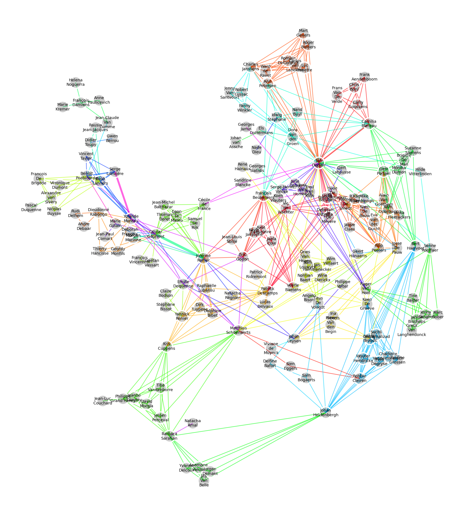
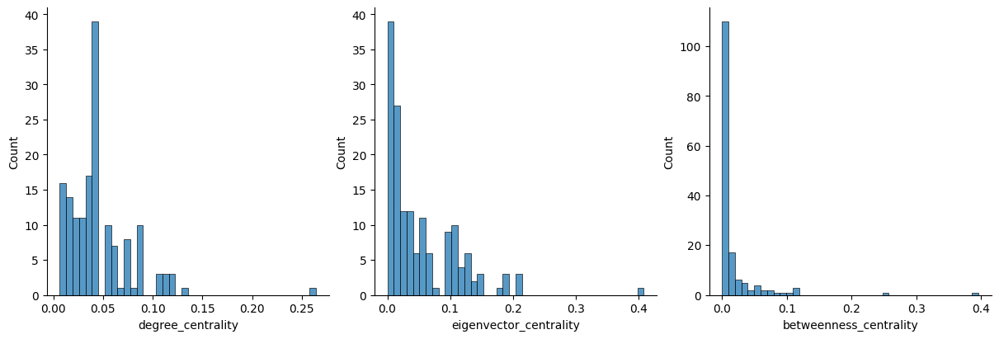
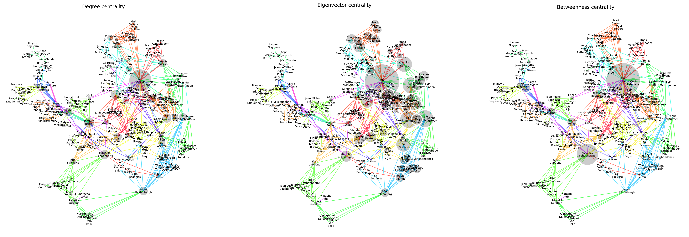
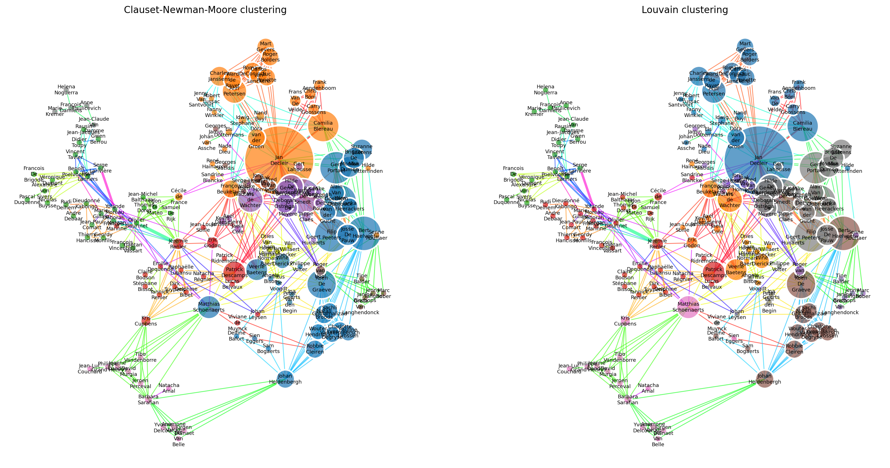

Graph with 191 nodes and 558 edgesThe belgian actor subnetwork
Creating a graph of belgian actors
The belgian subnetwork is formed by slicing the original graph, keeping only nodes corresponding to belgian actors, and the edges between them.
We end up with the following graph :
However, looking into the graph, we see that it is composed of a large central cluster and a few smaller graphs of at most 5 nodes. These are the result of slicing the original graph, where belgian actors that incidentally played together in an international movie still appear, despite being isolated.
We list out the connected components, and keep only the largest one.
Graph with 156 nodes and 526 edges
Graph with 3 nodes and 2 edges
Graph with 2 nodes and 1 edges
Graph with 3 nodes and 3 edges
Graph with 5 nodes and 10 edges
Graph with 3 nodes and 3 edges
Graph with 3 nodes and 2 edges
Graph with 3 nodes and 2 edges
Graph with 3 nodes and 3 edges
Graph with 2 nodes and 1 edges
Graph with 3 nodes and 2 edges
Graph with 2 nodes and 1 edges
Graph with 3 nodes and 2 edgesBefore we jump into the graph analysis and visualization, we make a small detour to examine the data. In particular, we would like to detect some cliques by naively looking at the number of movies actors have in common. This is done in Figure 1, which shows that most actors in the belgian graph feature together in only one movie.
We list out the actors that feature together in more than 3 movies :
| actor1_name | actor2_name | movie_count | |
|---|---|---|---|
| 73 | Patrick Descamps | Lucas Belvaux | 3 |
| 347 | Bouli Lanners | Benoît Poelvoorde | 3 |
| 422 | Olivier Gourmet | Jérémie Renier | 4 |
| 508 | Serge Larivière | Yolande Moreau | 3 |
From this data, it is not immediately clear whether there is a clique formed by or containing these actors. Time to visualize the graph !
A first visualization
We visualize the actor graph in Figure 2, coloring edges based on the 72 different movies, and making edges proportionally larger to the number of movies two actors have in common.

From this visualization we can see the emergence of small communities corresponding to one movie played in common. In the lower left, we can see Barbara Sarafian bridging the gap between two small communities.
Some individuals, such as Jan Decleir or Jérémie Renier stand out by the sheer number of edges connected to them.
Just left of Jérémie Renier, we can also visually inspect and confirm the small clique composed by Yolande Moreau, Serge Larivière, Benoît Poelvoorde, and Bouli Lanners.
Jean-Claude Van Damme, a well-known actor, appears marginal here. This again is an effect of slicing the original graph, where Jean-Claude Van Damme was well-connected, but appeared in more international movies, with non-belgian actors.
Indicators of centrality
Instead of relying on visualization to evaluate centrality, we can also compute diffent metrics, such as degree, eigenvector and betweenness centrality.
For each centrality metric, we print out the top-5 actors.
| degree_centrality | actor_name | |
|---|---|---|
| 106 | 0.264516 | Jan Decleir |
| 107 | 0.129032 | Jérémie Renier |
| 45 | 0.122581 | François Beukelaers |
| 149 | 0.116129 | Filip Peeters |
| 100 | 0.116129 | Matthias Schoenaerts |
| eigenvector_centrality | actor_name | |
|---|---|---|
| 106 | 0.408367 | Jan Decleir |
| 10 | 0.209502 | Werner De Smedt |
| 56 | 0.205922 | Bert Haelvoet |
| 149 | 0.204257 | Filip Peeters |
| 58 | 0.193717 | Gert Portael |
| betweenness_centrality | actor_name | |
|---|---|---|
| 106 | 0.395843 | Jan Decleir |
| 100 | 0.254062 | Matthias Schoenaerts |
| 45 | 0.116199 | François Beukelaers |
| 107 | 0.110377 | Jérémie Renier |
| 69 | 0.108920 | Bouli Lanners |
Jan Decleir comes out on top each time. Matthias Schoenaerts, François Beukelaers as well as Filip Peeters appear two times. The different methods result in quite different results. We try to explain this by plotting the distribution of the centrality measures in Figure 3, as well a visualizing in Figure 4.


This yields the following observations.
Degree centrality
Degree centrality only yields local information, since it is just proportional to the local node degree. Therefore, it might not be as insightful as compared to measures which take into account the entire graph
Visually, we see that Jan Decleir appears as a the only very large node. This points to the problem that degree centrality only looks “one hop away”, where we would intuitively think that neighbours of Jan Decleir would have larger centrality, just because they are directly connected to a hub.
Eigenvector centrality
Mathematically, this adresses the issue of “one-hop” degree centrality, as this centrality is derived from a self-consistent equation taking into account the whole graph. Nodes connected to the high eigenvector centrality nodes are more likely to have a high eigenvector centrality. Eigenvector centrality produces a powerlaw-like distribution : only a few actors are “central”, with many actors having a small centrality.
Betweenness centrality
Many nodes have zero betweenness centrality : these correspond to actors on the “edge of the graph”, and therefore do not contribute to the general connectedness of the graph. And indeed, this is confirmed visually, as nodes far away from the core appear very small (and should not appear at all, if it weren’t for the minimal node size set for the visualization). Barbara Sarafian, despite living on the edge of the graph, has a nonzero betweenness centrality, as this actor connects two small communities.
Clustering
Another important aspect of social networks is the formation of clusters. Again, there exist algorithms to try to find these clusters. We study two such algorithms, the Clauset-Newman-Moore and Louvain algorithms. Their comparison is interesting, in that their approach are opposite.
The Louvain algorithm tries to join clusters together to increase modularity, which measures how internally well-connected the cluster is compared to the outside.
The Clauset-Newman-Moore algorithm splits the graph, removing edges with high betweenness. The reasoning behind this is that communities are separated by a few edges, through which the majority of the “traffic” between the two communities flow.

Figure 5 visualizes the different clusterings. Communities often group actors which seem to have similar eigenvalue centrality, and have played in the same movies. For instance, the green community is well connected by majoritarily two movies, colored cyan and purple.
In the Louvain clustering, three communities (blue, gray, brown in the right of the graph) stand out as corresponding to the “popular” belgian actors, all having large eigenvalue centrality. The five other communities (green, red, pink, orange, purple) are that of smaller actors. These might correspond to more “niche” communities. We note that the niche communities rely on highly connected actors to connect to the rest of the graph. Notably in this case, Matthieu Schoenaerts and Johan Heldenbergh provide a bridge to and from the pink community.
For this particular graph, the Louvain clustering seems more reasonable. The blue community from the Clauset-Newman-Moore clustering seems to be way too large, especially when a very small gray community in the upper-left is composed of only 5 nodes. Louvain clustering on the other hand, seems to produce more evenly distributed communities.
One explanation for this could be that the Louvain algorithm works on node degree, instead of the edges. In this case, the node degree should be taken into account, as we would expect to group “popular” and “niche” actors in separate communities. The Clauset-Newman-Moore places importance on edge via the betweenness measure, however we argue that the edges generated by each movie should be equally important, rendering this algorithm less effective for our problem.